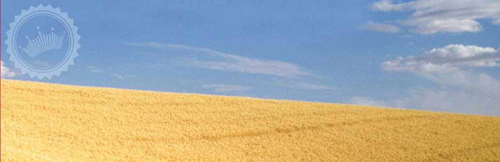
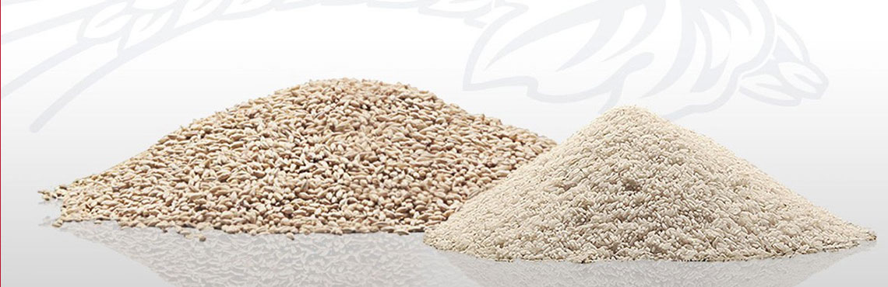
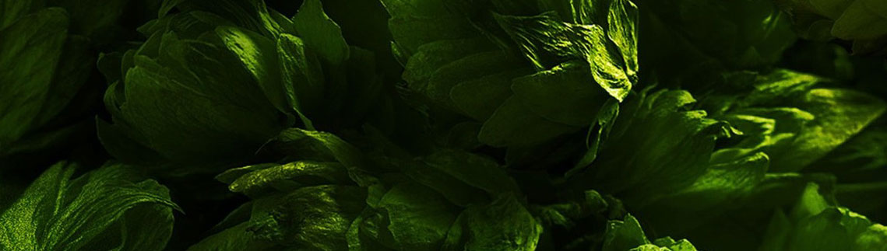
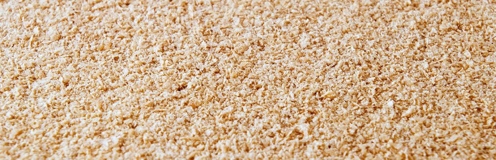
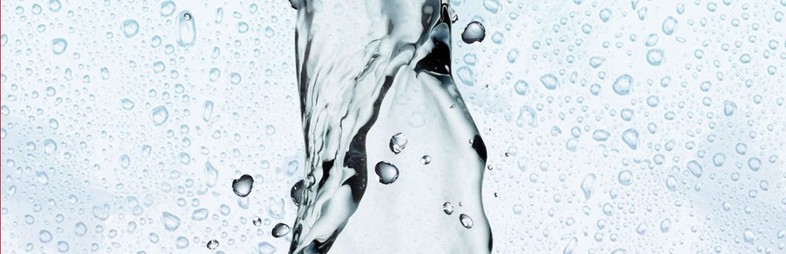

Найкращі інгредієнти
Що стосується рецептури, то ми дуже консервативні. Легендарний рецепт пива BUD залишається незмінним з 1876 року. BUD вариться із добірного ячмінного солоду з унікальною технологією вирощування. Спеціально для BUD була розроблена оригінальна рецептура приготування солоду.

Свіжий рис
Ми варимо наш лагер з використанням свіжого рису – подрібненого, полірованого, добірного і миттєво звареного, щоб надати пиву легкий смак з пікантною гірчинкою. Це процес недешевий, але результат того вартий.

ДОБІРНИЙ ХМІЛЬ ТА СОЛОД ВИЩОГО ҐАТУНКУ
Чесно зізнатись, ми дуже прискіпливі до виробництва. Пиво BUD вариться на Харківській броварні за унікальним рецептом із натуральних складників. Ми обираємо найкращі зразки американських та європейських сортів хмелю, а добірний солод виготовляємо на вітчизняних солодовнях. Ароматний хміль та ячмінний солод вищого ґатунку створюють неперевершений смак пива BUD.

Унікальні дріжджові культури
Вражаюче, але для виробництва однієї пляшки BUD використовується приблизно 30 мільйонів дріжджових клітин, що є прямими нащадками оригінальної культури, яку використовував Адольфус Буш.

Вода кришталевої чистоти
Незмінно чиста вода є ключем до неодмінно чистого пива BUD. Наша лабораторія перевіряє якість води на відповідність стандартам. Зразки очищеної води регулярно стікаються з усіх країн світу в штаб-квартиру в США і ретельно тестуються пивоварами. Нас вважають схибленими на якості, але ми просто натхненно робимо свою справу.
Тепер ви знаєте все про інгредієнти, але що вам відомо про сам
процес ?